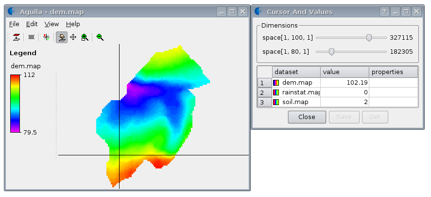

Leave the plot by selecting 'Exit' in the 'File' menu item (left mouse button).
The text is supported by computer batch files that will automatically execute the operations and models described. It is assumed you have PCRaster correctly installed.
A similar text as this demo is readable in the applications section of the PCRaster home page. The application is named: A simplified hydrological runoff model. That text does not require to run PCRaster, all data is included as figures.
The PCRaster approach is different. The dynamic model is built with a Dynamic Modelling language that runs inside an easy to use GIS. The Dynamic Modelling language is especially meant for building environmental models. Unlike low level computer languages it can be used by a researcher even if he has no expertise in programming. The researcher can build the model him- or herself without loosing understanding in the model components and structure.
The Dynamic Modelling language is an extension of the ideas behind Map Algebra and the Cartographic Modelling Language proposed by Berry and Tomlin. It follows the same approach as Map Analysis Package (MAP) in the sense that it provides a set of generic operators, which can be used as primitives for the models. The main extension to MAP-type programs is that the Dynamic Modelling language provides time operators for retrieving and storing dynamic data in iterative models. These iterative models are built in a structured Dynamic Modelling script.
The learning path of the Dynamic Modelling language is rather short because the same operators that are used for static operations (queries from the command line) are also applied in a dynamic spatio-temporal model. So, somebody who grasps the principles of the map algebra operators is able to build a dynamic model in a relatively short time, using the same map algebra operators as building blocks of the model.
It is arrogant to state that any spatio-temporal can be built with the Dynamic Modelling language, but it is clear that the Dynamic Modelling language is powerful in a wide range of environmental studies. It is applied for building hydrological models, erosion models, crop growth models, soil gas diffusion models, cellular automata models, solar radiation models and 3D geomorphogenetical models at geological time scales for both denudative and sedimentary zones.
This text does not cover the scientific aspects of the quantitative modelling of natural processes, but introduces you to the main features of the Dynamic Modelling tool. The Dynamic Modelling language is explained with a simplified hydrological runoff model.
The batch files are to be executed from a command prompt. The batch files are stored in the sub directory Demo of the PCRaster workspace that is installed. If you have installed PCRaster on C:\PCRaster, then change the working directory of the shell by typing:
-> Type: cd C:\PCRaster\workspace\Demo
PCRaster maps and timeseries files are displayed with the aguila program.
-> Type: 1
This will execute the batchfile 1.bat.
Three maps are displayed, the name of the maps is shown on the left side of the windows:

For the three rainstations in the study area, rainfall data are available for a week on a 6 hour basis. The model that will be created will simulate the spatial pattern of superficial runoff during this week, taking into account that different amounts of water infiltrate in the different soils. So what is needed is to
The rainfall data for the three rainstations are stored in an ascii formatted timeseries file.
-> Type: 2
The file contains a few header lines, followed by the data, formatted in four columns. The first column denotes the timestep (each line represents 6 hours) and the succeeding columns the rainfall for rainstations 1, 2 and 3.
-> Type: 3
This is a timeplot of the data in the rain timeseries file; it gives the rain for the three rainstations. Pressing the left mouse button in the graph will select a timestep for which the values are displayed in the lower left cursor view.
Leave the plot by selecting 'Exit' in the 'File' menu item (left mouse
button).
The next step in building the model is to get for each cell the rainfall based on the three measurement stations. Here, the simple assumption is made that for each location the nearest rain measurement is the most characteristic. To identify that station for each cell, the generic cost distance surface function named spread and spreadzone is applied.
-> Type: 4
The spread function computes the smallest cost ('distance') to reach one of the non zero points on the map. In the function one can also specify an initial cost for each cell and a friction map to vary the cost over the landscape ('relative distance' calculation). Here a constant friction of 1 and no initial cost (0) is applied, so the absolute distance is calculated. Leave aguila by selecting 'Exit' in the 'File' menu item (left mouse button).
-> Type: 5
The spreadzone operator applies the same algorithm as the spread operator but for each cell it returns the unique cell value of the rainstation (1,2 and 3) on rainstat.map that is nearest. Leave aguila by selecting 'Exit' in the 'File' menu item (left mouse button).
The next step is to link the rain timeseries data to the rainzone.map and to generate for each 6 hour timestep a map with the distribution of the rain in the catchment. This is done in a short dynamic model rain.mod which will be the basis for the runoff model that is built.
-> Type: 6
The Dynamic Modelling script consists of separate sections, each of which has a specific function in the dynamic model. The sections needed for building an iterative Dynamic Model are the binding section, areamap section, timer section, initial section and the dynamic section. The sections always start with the section header keywords binding, areamap, timer, initial and dynamic.
The binding section regulates the database management of the files used throughout the program. For each variable it binds the name of a variable in the model to the database filename for that variable. For instance the model variable name RainStations is binded to the file rainstat.map in the data base, which is the map with the location of the rainstations. The advantage of this binding approach is that if a model is run several times, each time with different input and resulting output variables, the user only needs to change the database filenames in the binding section, instead of changing all the occurrences in the script.
The areamap section defines the geographical attributes of the model area and the spatial resolution (cell size) with a mask map.
The timer section regulates the duration and timeslice of the model. The rain.mod simulates one week represented by 28 steps (iterations) of 6 hours.
The initial section sets the initial conditions for the model, including maps and non-spatial attributes. These values may be defined with one or more PCRaster operation. The initial values are used at the start of the dynamic section for the iteration at the first timestep. The initial section of the rain.mod contains the spreadzone operation previously explained.
The dynamic section defines the operation(s) for each time step i that result in maps for that time step. Each timestep dynamic data can be read from the data base. Also results of timestep i can be input values for timestep i+1. The dynamic section of rain.mod contains only one operation. This timeinputscalar operation reads each timestep one line in the rain timeseries file RainTimeSeries (linked to rain.tss in the binding section) and assigns the values for each rain measurement station to the rain zones on the RainZones map. The operation is preceded by the report keyword which effects that the results are stored in the database, for each timestep.
The ascii formatted Dynamic Modelling script can immediately be executed with the pcrcalc program.
-> Type: 7
The rainfall maps are stored in the database:
-> Type: 8
To load the rainfall maps in aguila, do:
-> Type: 9
Now select Animate in the View menu. During the animation you can still select and view individual cell values. Leave aguila by selecting 'Exit' in the 'File' menu item (left mouse button).
A part of the rainfall and runoff will infiltrate in the soil.
-> Type: 10
The infiltration capacity (the maximum amount of water that can infiltrate during one timestep of 6 hours, mm/6 hours) is different for each soil type. Clay has a very low infiltration capacity, sand a high capacity and loam a medium capacity. Leave aguila by selecting 'Exit' in the 'File' menu item (left mouse button). The infiltration capacity values are given in the lookup table infilcap.tbl.
-> Type: 11
The first column contains the unique codes of the soil classes on soil.map, the second column gives the infiltration capacity values (mm/6 hours).
Now the lookupscalar operator is applied to create the infiltration capacity map. For each soil class on soil.map it assigns the infiltration capacity for that soil class given in infilcap.tbl:
-> Type: 12
with the result:
-> Type: 13
Leave aguila by selecting 'Exit' in the 'File' menu item (left mouse button). The excessive rain must be redistributed downstream over the catchment. First a local drain direction map is made which contains for each cell a pointer to its lowest downstream neighbour on the digital elevation map. This ldd map is generated with the lddcreate operator:
-> Type: 14
-> Type: 15
aguila now shows the drainage directions on top of the elevation. Click on a few locations in the map to inspect the drainage directions. Also try to zoom in using the zoom command in the View menu:
For modelling the infiltration and runoff, the ldd.map and the infilcap.map are used as input map of the accuthresholdflux operator. This operator effects infiltration of the rain and transports the excessive water that does not infiltrate downstream over the local drain direction map. For each cell, the amount of material that is transported to its downstream cell is the amount of water that flows into the cell from upstream cells minus the infiltration capacity value on infilcap.map. The operator is illustrated here with one rainfall map, from timestep 18, which you have just generated with the dynamic model rain.mod:
-> Type: 16
-> Type: 17
Note that the runoff.map contains runoff values in millimeters (mm) waterlevel in the cell.
The runoff map is better visualized using a logarithmic color ramp. To do this:
In most areas the infiltration capacity is exceeded and runoff of excessive water occurs. This is not the case for all the sandy soil patches. The sandy soils have an infiltration capacity of 19 mm while the amount of rain nowhere exceeds 15.3 mm. So at the sandy soils runoff will only occur when a great amount of water is supplied from upstream areas with lower infiltration capacities. The sandy soil patch in the centre of the area is located at the top of a hill, so it does not have upstream areas that supply water. As a result the infiltration capacity is not exceeded here and no runoff occurs. Here, the cells on runoff.map have a value of 0 representing no runoff. On the contrary at the sandy soil patches at the top right corner runoff does occur. This is caused by the large amount of water transported from upstream clayey and loamy cells here. This amount is that large that the infiltration capacity of the sandy soils is exceeded by the supplied water.
Leave aguila by selecting 'Exit' in the 'File' menu item (left mouse button).
The amount of water that actually infiltrates is computed with the accuthresholdstate operator:
-> Type: 18
-> Type: 19
Again note the difference in actual infiltration between the sandy soil patch in the centre and the two patches at the top left corner of the area. Leave aguila by selecting 'Exit' in the 'File' menu item (left mouse button).
Now back to the model. The runoff.mod, which is based upon the rain.mod you have run at the start of this text, contains all the above described operations needed for simulation of the runoff.
-> Type: 20
The operations for the calculation of the infiltration capacity map and the ldd map have been put in the initial section because these need to be executed only once, at the start of the model run. The iterative dynamic section contains the accuthresholdstate and accuthresholdflux operations and one reported operation for conversion of the runoff from mm/6 hours to m3/second, with the ConvConst value.
-> Type: 21
-> Type: 22
The animation, started by selecting Animate in the View menu, gives a good impression of the spatial and temporal pattern of the runoff. As previous a logarithmic scale, is better suited here. Select a true logarithmic scale with a min(imum) cutoff of 0.00001, before starting the animation.
Leave aguila by selecting 'Exit' in the 'File' menu item (left mouse button).
The Dynamic Modelling language also allows to 'sample' the cellvalue at certain locations on a map for each timestep and report these values as a timeseries. This will be done at the sampling locations on samples.map:
-> Type: 23
-> Type: 24
The dynamic section of the runoff2.mod contains the timeoutput statement for reporting the runoff values at the sampling locations to the data base. This operator needs two input maps: 1) the map with the sampling locations - here it is SamplingPlaces binded to samples.map in the binding section and 2) the map that is sampled - here it is the Runoff map. constant ConvConst.
Now, the runoff2.mod is run:
-> Type: 25
The model has reported the timeseries runoff.tss to the data base. It is ascii formatted. Like in the timeseries file for the rain, the first column identifies the timesteps. The second and third column contain the runoff values for the two sampling locations.
-> Type: 26
-> Type: 27
The aguila program draws the hydrographs for the two sampling locations in one graphic, rain.tss is displayed in a separate window. In both graphs you see the same pattern occurring.
Leave the plot by selecting 'Exit' in the 'File' menu item (left mouse button).
The model evaluated is very simple, but it can easily be extended by adding operations to the script. For instance it is possible to incorporate complex infiltration equations in the model (where infiltration is a function of the amount of rain which fell during the previous timesteps, K-sat, vegetation etc.) or to build a model with a much shorter timestep (for instance 10 seconds) and route the runoff downstream according to the Manning equation. An example of a such an event based model written in the Dynamic Modelling language is LISEM (De Roo et al., 1996). Short rainstorms which move over the catchment can be modelled also.
It is stressed here that the Dynamic Modelling language is meant for all kind of environmental studies. It is not especially meant for hydrological modelling. For instance it is also applied in ecology (Van Deursen & Heil, 1993).